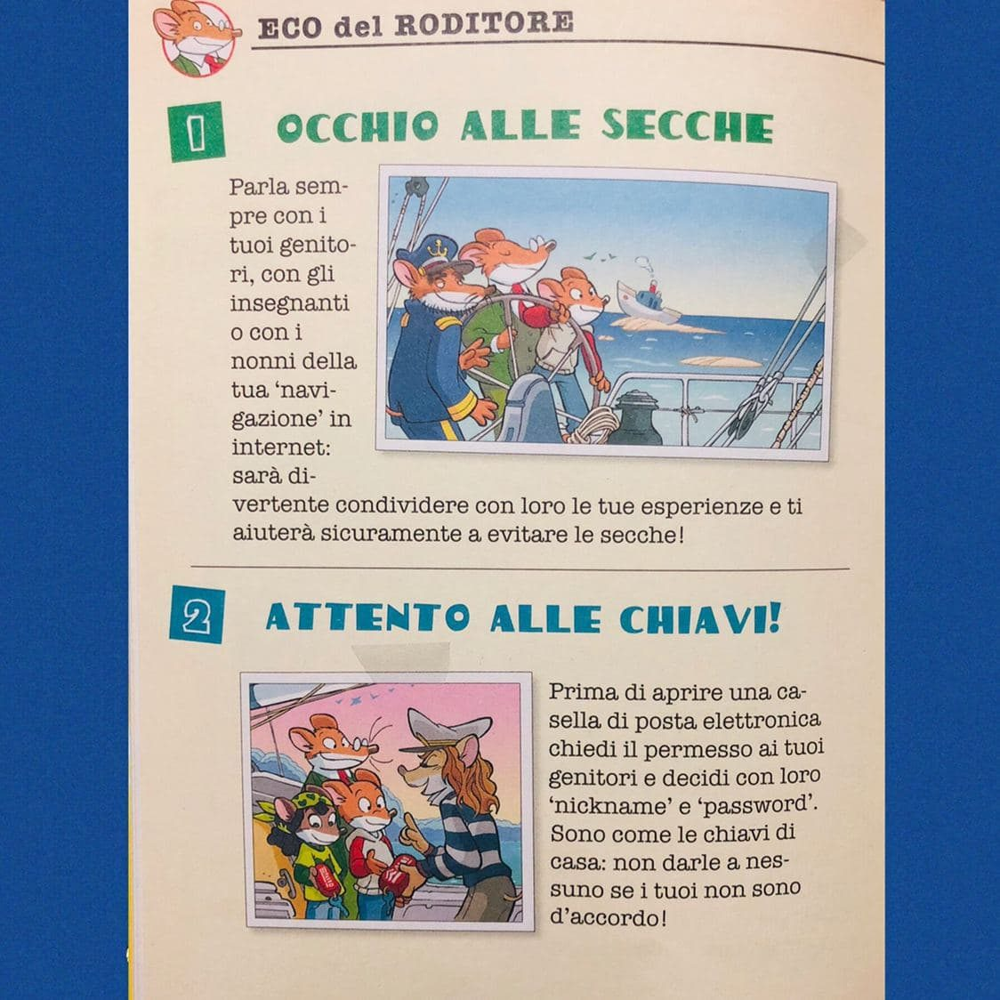
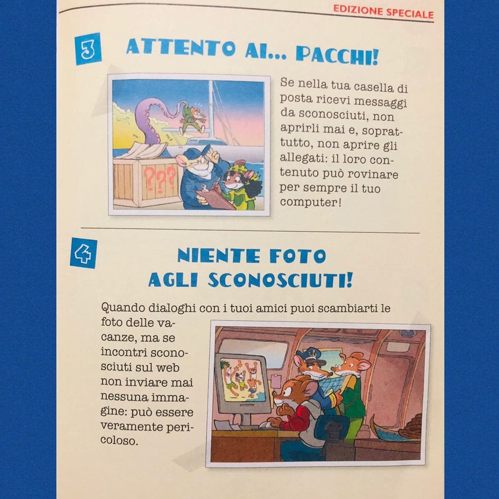
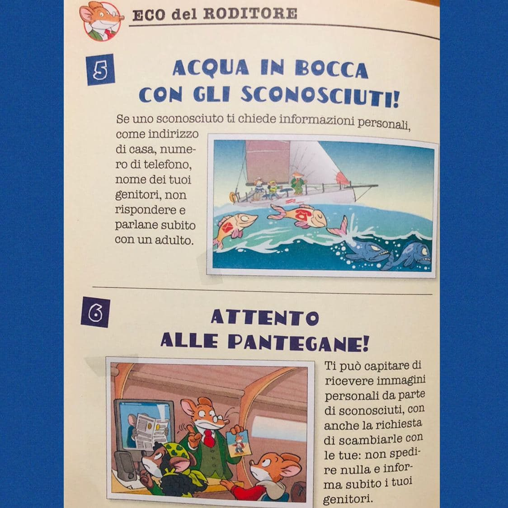
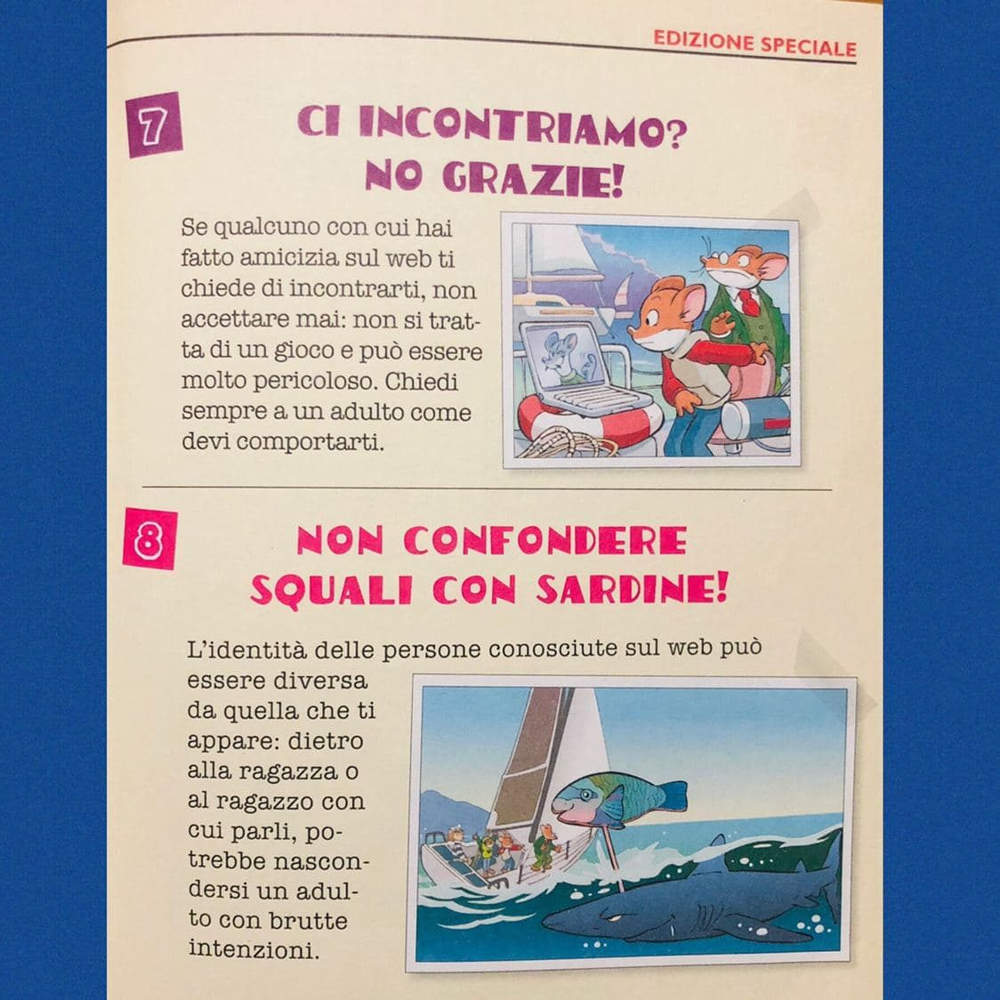
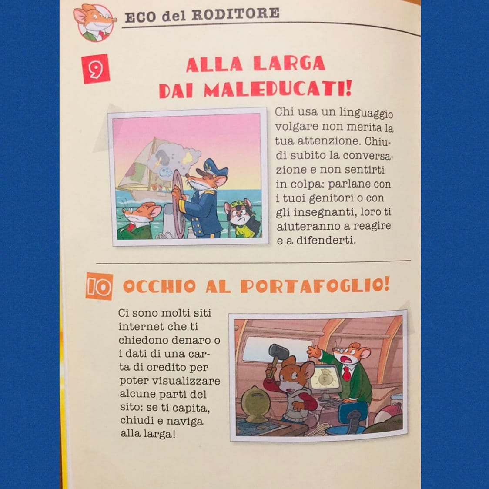
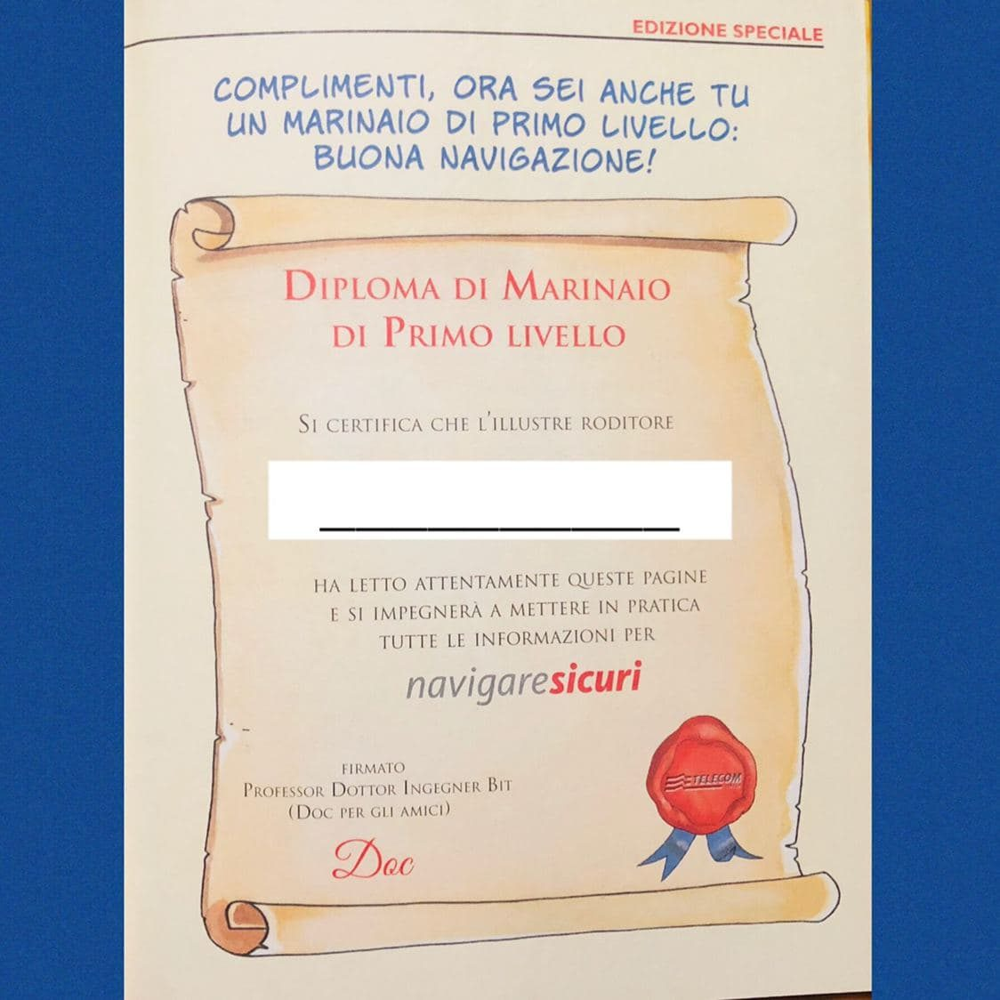

10 REGOLE D'ORO:
- 01 OCCHIO ALLE SECCHE
- 02 ATTENTO ALLE CHIAVI

- 03 ATTENTI AI... PACCHI
- 04 NIENTE FOTO AGLI SCONOSCIUTI

- 05 ACQUA IN BOCCA CON GLI SCONOSCIUTI
- 06 ATTENTO ALLE PANTEGANE

- 07 CI INCONTRIAMO? NO GRAZIE
- 08 NON CONFONDERE SQUALI CON SARDINE !!

- 09 ALLA LARGA DAI MALEDUCATI !
- 10 OCCHIO AL PORTAFOGLIO !

COMPLIMENTI, ORE SEI ANCHE TU UN MARINAIO DI PRIMO LIVELLO !! BUONA NAVIGAZIONE

Se lo desideri, iscriviti ai mie canali social per restare aggiornato ⬇️
Social MediaInoltre se hai trovato utile ed interessante questo articolo, non esitare a condividerlo, a lasciare un tuo mi piace 👍, o seguire la mia pagina Facebook, per sostenermi e continuare ad informare. Grazie anticipatamente a chi vorrà farlo.